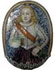
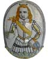
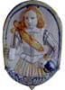

| Arms
of Light of Nevers
by Olivier Estienne
These pieces are of a typical character: forty centimeters height,
width twenty-six to thirty cm, generally with an oval form. They
represent, in low-relief, the bust of a young man, dressed as a
page, with a feathered hat and sash. The arm, held in front, holds
a goblet intended to receive a candle.

These objects were press-molded, the arm being added before firing.
The same mold was sometimes used for the manufacture of several
plaques, which were painted with differing colors and details, such
as the ribbons or hat.
Manufacture extended throughout the 17th century, the oldest known
example being from 1601 - that date to be seen on the reverse of
an arm of light sold in Joigny on March 20, 1988. Another sold at
the Drouot hotel on March 26, 1973 carries the date "Nicolas
1671".
It is necessary to note that the arms of light were made in factories
making decorative sets; the characters of these sets looked to the
left, looked to the right, raised the eyes to the sky or droped
them timidly. It is impossible to reconstitute these sets today.
There are also female arms of light, but these are much rarer.

The fashion arose again at the end of the 19th century. Thus, at
the opening of the Cultural Museum of Nevers in 1987, one could
view a plaque "Jeanne d' Arc", and a plaque "Dunoys"
in imaginary costumes of the middel ages.
Earthenware arms of light of Nevers are rare. There are 28 of them
known, including 16 in public collections and 12 that have gone
to public sale in the past 50 years. Taking into account the normal
rotation of this type of stock, one can estimate the total number
held in private hands to be about thirty pieces.
Many thanks to Olivier Estienne, author of ceramicscollector.com
for the use of this article. © The
author.
More Articles |